|
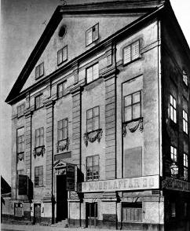 8. Götgatan 38, Bangårdsgatan 7, Södra Bantorget. Lillienhoffska palatset, kv Nederland |
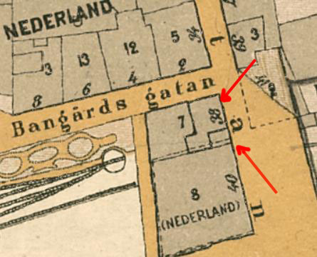 |
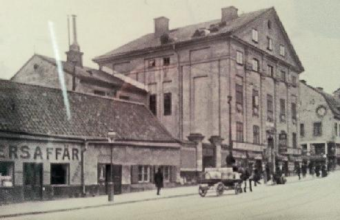 Lillienhoffska palatset på 1920-talet |
|
Går vi ner mot Södra bangården och nuvarande Medborgarplatsen finner vi i likhet med Ebba Brahes hus längre norrut ett annat stormaktsminne, det Lillienhoffska huset, tidigare allmänt, men tydligen av misstag, kallat det Rumpfska. Det byggdes 1670 och att arkitekten, Johan Tobias Albinus, var en skicklig fackman syns av husets harmoniska linjer och originella utformning. Engelska diplomatin residerade här på 1700-talet, då det nätta lilla slottet säkert hade ett behagligt läge i den branta sluttningen mot den då ännu inte alltför illaluktande Fatburssjön, men 1773 var det slut på glansen, då flyttade Katarinas fattiga in och stannade ända till 1888. Numera är Lillienhoffska huset i ett utmärkt skick efter en lyckad renovering och rymmer en del allmännyttiga inrättningar. Här finns föreläsningssal och lokaler för klubbsammanträden och i engelska ministerns paradsängkammare äts det dagligen skollunch. (Ur Tjerneld, Stockholmsliv del II, 1950) |
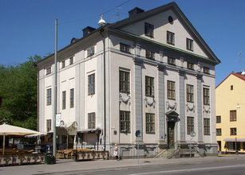 Fasaden mot Götgatan från sydost |
|
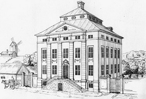 Rekonstruktion av husets ursprungliga utseende. |
Wikipedia:
Lillienhoffs tid
Palatset byggdes under åren 1668–1670 för köpmannen Joachim Potter (1630–1676). Enligt en del källor uppges som byggherren den nederländska generalstaternas ambassadör i Stockholm, Christian Constantin Rumpf (därav namnet Rumpfka huset).[2] Namnet kom dock av en missuppfattning, förmodligen en sammanblandning med ett annat hus vid Götgatan som ägts av familjen Rumpf.
Potter adlades år 1668 till Lillienhoff, vilket gav byggnaden dess nuvarande, mera brukliga namn som används sedan 1939. Potter/Lillienhoff hörde till de större skeppsägarna i Stockholm och var vid sin tid en av Stockholms rikaste män. Han var också medintressent i flera av de kompanier som på 1660-talet hade ensamrätt att driva handel med vissa varor, exempelvis tjärkompaniet och sockerkompaniet. Han var även delägare i bland annat Västerviks skeppskompani, Falu koppargruva och Svenska Ostindiska Companiet.[4] 1667 förvärvade han en stor tomt som sträckte sig från Götgatan ner till den numera försvunna sjön Fatburen. På tomten fanns redan en mindre byggnad, som revs inför palatsbygget
I Holms tomtbok från 1674 framgår tomtens utsträckning (Jochim Lilienhofz Grund och Trägårtz Tompt) i dåvarande kvarteret Nederland. Ritningarna upprättades av den tyskfödde arkitekten Johan Tobias Albinus som bland annat ritade Reenstiernska palatset vid Wollmar Yxkullsgatan på Södermalm. Båda byggnader har vissa likheter. Byggmästaren var Johan Persson. 1673 pågick en process mellan Lillienhoff och Persson. Den förre klagade över ett dåligt bygge, särskilt taket medan den senare menade att huset var i bra skick när det stod klart..
Enligt mantalslängden från 1676 var boenden "Ass. H. Lillienhoof sielf samt 1 manfolk, 1 quinnfolk, 3 drängpojkar och 2 pigor". Efter Lillienhoffs död 1676 är ägarhistorien under de följande två årtiondena osäker. Grosshandlaren Jochum Green köpte åtminstone delar av fastigheten 1676. Han bebodde gården med hustru, 12 barn, en piga och en "lösboende". Lillienhoffs änka Petronella (född Lohe) fanns kvar i huvudbyggnaden fram till sin död 1694. En rättstvist mellan henne och Lillienhoffs arvingar ledde till att hon levde i fattigdom och misär. Under hennes tid förföll därför byggnaden. |
|
Byggnadens utformning
Fasaderna smyckades med kraftfulla fruktfestonger, kolossalpilastrar och andra motiv från den holländska barocken, som var vanliga för den stockholmska palatsarkitekturen på 1600-talets mitt. Ursprungligen hade palatset en trädgård mot väst som gränsade till Fatburen. Där har i stället en nedsänkt inhägnad borggård ordnats. Från början hade huset ett brant säteritak och fronton mot Götgatan. En ändring av yttertaket enligt en ritning från 1786 utfördes aldrig. Nuvarande takutformning med sadeltak tillkom någon gång före 1816.
Köket anordnades i källarvåningen, det renoverades 1939 till nära nog ursprungligt skick. I bottenvåningen fanns en sal med dekorationsmålade dörrar och fönsternischer. Taket gestaltades med stuckarbeten och målningar visande amoriner som symboliserade alla årstider. Övre våningen var paradvåningen, där ägaren bodde med sin familj. Här ligger den ännu bevarade paradsängkammaren med rik, förgylld stuckdekor som restaurerades 1939.
|
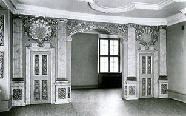 Paradsängkammaren efter renoveringen 1939 |
|
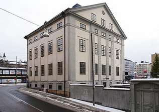 Fasad mot nordväst (Noe Arksgränden).
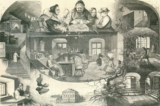 |
Tiden efter Lillienhoff
År 1699 ägde friherren Erik Soop (1643–1700) gården. Han var gift med Margareta Christina (född Oxenstierna af Croneborg) och bodde i palatset med sin hustrun, en jungfru, hustruns kammarpiga, en barnpiga, en målare, en kock, en kökspiga, en tvätterska och tre drängar. Kring 1720 uppges Lennart Ribbing som ägare. Efter ytterligare ägarbyten förvärvades palatset 1723 av den engelske diplomaten och ambassadören i Stockholm, Robert Jackson, som redan 1711 var hyresgäst i huset när Soops änka var ägare. Under 20 år hade Jackson palatset som sitt residens. Lillienhoffska huset kallas därför även för Engelska huset och samma namn har också kvarteret sedan 1930. Jacksons son sålde huset 1743 till Couttonsväveriet som två år senare sålde det vidare till Katarina församling. Katarina fattighus
Vid mitten av 1700-talet antogs en lag som fastslog att alla församlingar skulle ta ansvar för sina fattiga och bygga fattighus. 1745 förvärvade Katarina församling byggnaden av Couttonsväveriet som då var ägare. Palatset blev då till Katarina fattighus eller Sankta Catarina församlings fattighus. Huvudbyggnaden hade liksom idag fyra våningar och hel källare. Från Götgatan ledde en hög stentrappa upp till entrén. Trapporna inne i huset var av sten upp till fjärde våningen och vidare av trä till vinden. Köket låg i den nedre våningen, den nuvarande souterrainvåningen. Övriga rum värmdes med spisar och kakelugnar.
Förutom huvudbyggnaden fanns ett litet stenhus och flera korsvirkesbodar. På 1770- talet utfördes flera ombyggnader. Från år 1786 existerar en ändringsritning avseende ny utformning av yttertaket. Ritningen är godkänd och signerad av dåvarande stadsarkitekten Carl Henrik König. Ombyggnaden kom dock aldrig till stånd utan genomfördes i stället till dagens utseende vid ett senare tillfälle före 1816. Enligt 1800-talets brandförsäkringsbeskrivningar låg ett bageri i huvudbyggnadens källarvåning och i souterrängvåningen ett kök samt två sjukrum. I rummen fanns sammanlagd 160 sängplatser, en del i dubbelsängar, och i det mindre huset tillkom ytterligare 18 sängplatser.
I Ny Illustrerad Tidning från 1881 finns ett reportage med en illustration från Katarina fattighus som visar den äldsta påträffade avbildningen av byggnadens interiörer. Några personer på illustrationen är också namngivna i artikeln: Bergströmskan som sitter överst och spritar fjäder och intill syns Inga med psalmboken. Mannen i nedre vänstra hörnet är en blind skomakare |
|
.
Stockholms stad blir ägare
År 1888 samlades fattigvården för hela Södermalm i en nybyggd fastighet i kvarteret Vattenpasset i Maria Magdalena församling (senare omdöpt till Rosenlunds ålderdomshem). Stockholms stads drätselnämnd tog över Lillienhoffska palatset och avvecklade fattighusets verksamhet. När Stockholms stad tog över fastigheten var byggnaden mycket sliten och nedgången. Lokalerna hyrdes ut till olika firmor, till exempel till skomakare Norgren, snickaren Prahl, bokföraren Stubbe, en vaktmästare Wessberg och Lorentz Anderssons möbelaffär samt en affär för sängkläder som man kan se på fotografier från 1880- och 1890-talen. Delar av byggnaden nyttjades som skola för "bildbara sinneslösa barn" med gymnsatiksal på vinden.
|
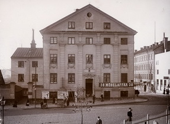 Lillienhoffska palatset på 1880-talet |
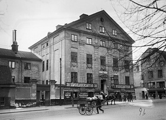 Lillienhoffska palatset 1891 |
|
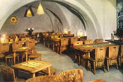 Restaurang Fatburen och Drufvan |
Verksamheter efter 1940-talet
Sedan 1940 har byggnaden används bland annat för restaurangverksamhet, föreläsningar, arkiv och kontor. I huset fanns lokaler för exempelvis Stockholms gatukontor, Mantalskontoret, Konsumentföreningen Stockholm och några arkitektkontor. Under några år existerade även Pressmuseum med pressarkivet. Vindsvåningarna har behållit sin bostadsfunktion i de lägenheterna som byggdes i samband med renoveringen på 1930-talet.
Bland restaurangerna kan nämnas Källaren Fatburen som hade sin verksamhet här på 1940-talet. Fatburen var ett enkelt och prisvärt lunchställe med musikunderhållning och uteservering på torget. Källaren Drufvan flyttade hit från Götgatan 50 (nuvarande 72) när huset revs i slutet av 1960-talet och fanns i Lillienhoffska palatset fram till 1980.
Efter Drufvan kom pizzerian La Buzzola. I ett av källarvalven har det tidvis sedan 1970-talet funnits diskotek som Apple, Rango Tango och annan liknande klubbverksamhet. Sedan 1987 finns restaurangen Snaps Bar & Bistro i huset med entré från fasaden mot Medborgarplatsen och stor uteservering på torget under sommartid. Renoveringar År 1939 totalrenoverades fastigheten. Bland annat försökte man återskapa den exteriör som byggnaden hade på de äldsta kända avbildningarna från slutet av 1700-talet. Inför renoveringen gjordes uppmätningsritningar av fasader och planer genom Stockholms stadsmuseum. Arkitekten bakom renoveringen var Martin Westerberg. Stockholms skönhetsråd var tveksam till dennes ursprungliga |
|
förslag som bland annat innehöll en utställningslokal med överljus på vinden. Skönhetsrådet krävde att en kulturhistorisk kontrollant skulle tillsättas. Den uppgiften övertogs sedan av riksantikvarien Gösta Selling. Vid samma renovering rekonstruerades även fritrappan mot Götgatan, fönstren byttes och porten ersattes av ett stilenligt dörrblad från en byggnad i Gamla stan. Man renoverade och konserverade även barockinteriörerna i paradvåningen (våning 1 trappa), arbetet utfördes av konservator Sven Dalén. Huset uppvisade sättningsskador som man fortfarande kan se på en del sneda dörröppningar. För att förebygga fortsatta sättningar utfördes 1980 en grundförstärkning i källarvåningarna. Golvbjälklagen revs och ersattes med betong, ingreppet innebar att valvtaket på den undre källaren försvann. Den undre källaren kan vara en rest av en äldre byggnad på platsen. Vid grundförstärkningen på 1980-talet framkom murverket, vars material och fogbehandling tyder på en äldre datering än palatset i övrigt. Vid en fasadrenovering år 2003 fick byggnaden åter sin ursprungliga färgsättning, som kunde fastställas utifrån bevarade äldre putsrester. |
{kind=link}
{kind=link}
{kind=link}
{kind=link}
{kind=link}
{kind=link}
{kind=link}